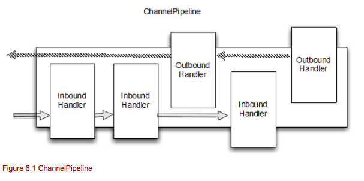
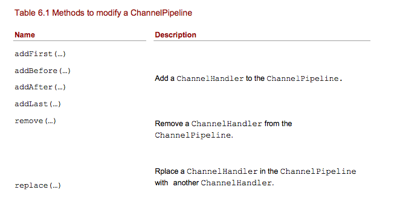
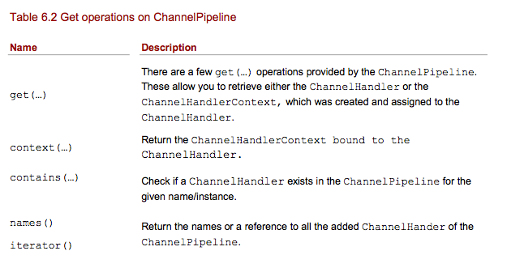
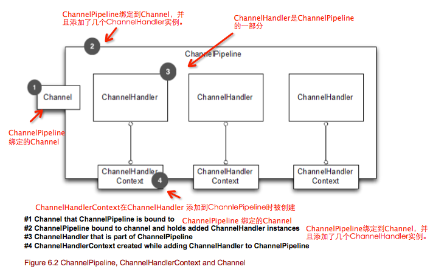
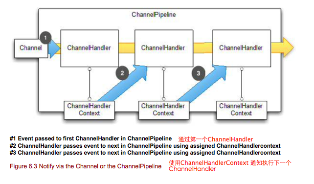
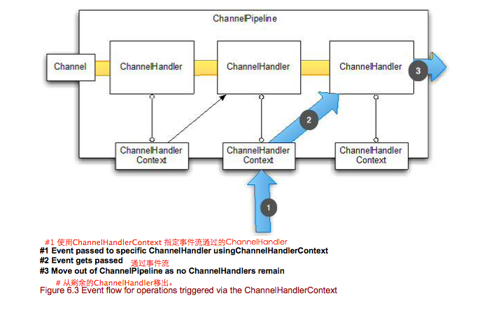
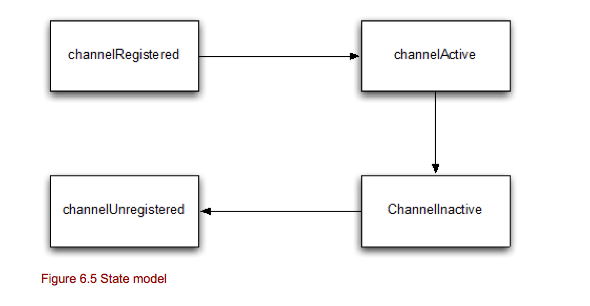
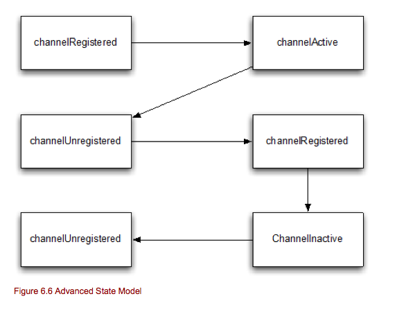

(翻译很生硬，基本不通，不要浪费时间。本人也是读这本书时顺便记录下来。2014-07-15更新)
本章内容
- ChannelPipeline
- ChannelHandlerContext
- ChannelHandler
- InBound和OutBound
接受和创建连接只是你应用程序的一部分，我们还需要编写很复制的代码去处理输入和输出的数据。
Netty 提供了很强大的方法来处理这些问题。他允许在处理数据的ChannelHandler上使用钩子。他还提供了ChannelHandler链，每个ChannelHander处理小的任务。这样有助于你写的干净和可重用的实现。
用ChnnelHandler处理数据也只是其中一个用法，你还可以用来废止I/O操作，而所有这一切都是实时的。
ChannelPipeline 是一个list,包含多个拦截和处理输入和输出操作的ChannelHandler实例。ChannelPipeline提供了拦截过滤器模式的一种高级形式，让用户完全控制如何处理事件，以及如何在ChannelPipeline的ChannelHandlers彼此交互。
对于每一新的channel,一个新的ChannelPipeline被创建和添加到channel中。一旦添加到channel中，channel和CahnnelPipeline的关联是不变的。channel不能添加其他的ChannelPipelie,也不能分离channle当前关联的ChannelPipeline。所有这些已经帮你处理了，你不需要处理他。
下图展示了ChannelHandlers在一个ChannelPipeline中典型的处理I/O流程。一个I/O操作可以被ChannelInboundHandler和ChannelOutboundHandler其中一个处理，然后通过调用ChannelInboundInvoker或者ChannleOutboundInvoker接口定义的方法转向最近的一个handler处理。ChannelPipeline扩展了他们两个。
(新版中ChannelInboundInvoker，ChannleOutboundInvoker已废弃。使用ChannelHandlerContext接口替代)
从上图可以看出，ChannelPipeline主要是ChannelHandler组成的一个列表(list)。如果一个inbound I/O事件被触发，他会从ChannelPipeline开始传递到末端。对于outbount I/O 事件，他会从ChannelPipelined的末端传递到开始。ChannelPipeline通过检查类型，知道ChannelHandler能否处理这事件。如果不能处理他，他会跳过这个ChannelHandler，使用下一个匹配的ChannelHandler处理。在ChannelPipeline上的修改是实时的，这意味着你可以添加、删除、替换ChannelHandler。这允许写入灵活的逻辑，如多路复用器。在本章后面我们会更详细的说明。
现在让我们看一下怎样修改一个ChannelPipeline。
下面代码演示了如何使用这些方法来修改ChannelPipeline.
Listing 6.1 Modify the ChannelPipeline
ChannelPipeline pipeline = ..;
FirstHander firstHandler = new FirstHandler(); #1
pipeline.addLast("handler1", firstHandler); #2
pipeline.addFirst("handler2", new SecondHandler()); #3
pipeline.addLast("handler3", new ThirdHandler()); #4
pipeline.remove("handler3"); #5
pipeline.remove(firstHandler); #6
pipeline.replace("handler2","handler4", new ForthHandler()); #7
#1 创建一个FirstHanlder实例
#2 添加FirstHandler实例到ChannelPipeline中。
#3 添加SecondHandler实例到ChannelPipeline第一个位置中，这意味着他在已存在的FirstHandler前面。
#4 添加ThirdHandle到ChannelPipeline中的最后位置。
#5 删除名称为handler3的ThirdHanlder。
#6 通过引用实例删除FirstHandler。
#7 用ForthHandler替换已添加的handler2，并且命名为hander4
正如你看到的，修改ChannelPipeline很容易，并且允许你根据需求添加，删除，替换ChannelHandler。
他允许你修改ChannelPipeline，也有一些让你访问被添加的ChannelHandler实现，来检查特定的ChannelHandler是否存在ChannelPipeline中。
ChannelPipeline 继承了ChannelInboundInvoker和ChannelOutboundInvoker，他暴露了调用inbound和outbound操作的额外方法。这些操作对于通知每一个ChannelPipeline中的ChannelInboundHandler处理不同的事件。（这些方法不再一一列出，请看API docs）
(新版中ChannelInboundInvoker，ChannleOutboundInvoker已废弃。使用ChannelHandlerContext接口替代。)
每当一个ChannelHandler添加到ChannelPipeline，一个新的ChannelHandlerContext会被创建并且关联他。ChannelHandlerContext 允许ChannelHandler之间交互在同一个传输下，这部分和ChannelPipline有点相同。
对于一个被添加的ChannelHandler，他的ChannelHandlerContext永远不会被改变，所以他可以从缓存中安全获取。
ChannelHandlerContext实现了ChannelInboundInvoker和ChannelOutboundInvoker。他有很多方法都出现在Channel和ChannelPipeline中。不同之处是如果你调用这些方法在Channel或者ChannelPipeline上，他们总是经过完整的ChannelPipeline。相比之下，如果你调用ChannelHandlerContext中的方法，他从当前位置开始，通知在ChannelPipeline里最近的ChannelHandler来处理事件。
你可以通过调用ChannelInboundInvoker和ChannelOutbountdInvoker中的方法来通知在相同ChannelPipeline中最近的handler。从哪里开始通知，取决于你对通知的设置。
下图中显示ChannelHandlerContext是如何属于ChannelHandler和绑定到ChannelPipeline上的。
现在，如果你想有贯穿整个ChannelPipeline的事件流，这里有两个不同的方法：
- 调用Channel上的方法
- 调用ChannelPipeline上的方法。
这两种方法让事件流贯穿整个ChannelPipeline，从头开始还是从末尾开始贯穿ChannelPipeline要取决于事件的性质，如果是一个inbound时间，他从头开始，如果是一个outbound事件，他从尾开始。
下面代码展示一个write事件怎么从ChannelPipeline的尾端开始通过ChannelPipeline。（他是一个outbound操作）
Listing 6.2 Events via Channel
ChannelHandlerContext ctx = ..;
Cahnnel channel = ctx.channel(); #A
channel.write(Unpooled.copiedBuffer("Action in Action",CharsetUtil.UTF_8) #B
#A 获取属于ChannelHandlerContext的Channel引用。
#B 通过channel写数据。
这个消息流通过整个ChannelPipeline。你可以通过ChannelPipeline做同样的事情。如下所示
Listing 6.3 Events via ChannelPipeline
ChannelHandlerContext ctx = ..;
ChannelPipeline pipeline = ctx.pipeline(); #A
pipeline.write(Unpooled.copiedBuffer("Action in Action",CharsetUtil.UTF_8) #B
#A 从ChannelHandlerContext 获取一个ChannlePipeline的引用
#B 通过ChannelPipeline 写数据。
消息流通过整个ChannelPipeline。上面的两个列子在事件流关系上，她们的操作都是相等的。你也应该注意到Channel和ChannelPipeline都可以从ChannelHandlerContext访问到。
下图展示被Channel或者ChannelPipeline触发的事件流。
这里可能有几种情景，你想从ChannelPipeline指定的位置开始，不想通过整个ChannelPipeline。比如：
- 为了节省不感兴趣的事件通过额外ChannelHandler的开销。
- 排除一下ChannelHandler
在这种情况下，你可以使用ChannelHandlerContext，这也是你的首先起点。请注意，他会使用ChannelHandlerContext执行下一个ChannelHandler，不会使用已经执行过的ChannelHandler。
下面代码展示使用ChannelHandlerContext是如何操作的。
Listing 6.4 Events via ChannelPipeline
ChannelHandlerContext ctx = ..; #1
ctx.write(Unpooled.copiedBuffer("Netty in Action", CharsetUtil.UTF_8); #2
#1 获取一个ChannelHandlerContext的引用。
#2 使用ChannelHandlerContext 写入buffer。
消息流开始通过ChannelPipeline，从下一个ChannelHandler到ChannelHandlerContext。 在这种情况下，事件流使用ChannelHanlerContext开始下一个ChannelHandler。
事件流如下：
正如你看到的，他从指定的ChannelHandlerContext开始，并且跳过他之前的所有ChannelHandler。使用ChannelHandlerContext操作是常见的模式。而且很常用，如果你从ChannelHandler实现调用操作。 你也可以从外部使用ChannelHandlerContext，因为这是线程安全的。
你可以调用pipeline()方法来访问你的ChannelHandler所属的ChannelPipeline。一个非凡的应用可以在运行时在ChannelPipeline里动态的添加，删除，或者替换ChannelHanlder。
注意你可以保持ChannelHandlerContext供以后使用，如触发事件以外的处理方法，甚至从不同的线程。
下面代码演示，如此存储ChannelHandlerContext供以后使用，并且从其他线程事件使用他。
Listing 6.5 ChannelHandlerContext usage
public class WriteHandler extends ChannelHandlerAdapter{
private ChannelHandlerContext ctx;
@Override
public void handlerAdded(ChannelHandlerContext ctx){
this.ctx = ctx; #A
}
public void send(String msg){
ctx.write(msg); #B
}
}
#A 存储ChannelHandlerContext引用，为以后使用。
#B 使用前面存储的ChannelHandlerContext 发送数据。
请注意，如果ChannelHandler实例被标注了@Sharable，他是可以被添加到很多的ChannelPipeline中。这意味着，ChannelHandler单一实例，可以有多个ChannelHandlerContext，因此他可以被不同的ChannelHandlerContext调用。
如果你试图给没有注解@sharable的ChannelHandler加入超过一个ChannelPipeline，将会抛出异常。注意，如果ChannelHandler使用了@Sharable，必须保证不同的线程安全的使用他，同时也保证不同的channel在同时使用他是安全的。让我们看看如何使用他。下面代码展示正确是shiiyong@Shareble注解。
Listing 6.6 Valid usage of @Sharable
@Sharable
public class SharableHandler extends ChannelInboundHandlerAdapter{
@Override #A
public void channelRead(ChannelHandlerContext ctx, Object msg){
System.out.println("Channel read message " + msg); #B
ctx.fireChannelRead(msg);
}
}
#A 使用@Sharable注解
#B 记录方法调用，并且转向下一个ChannelHandler。
这里使用@Sharable是有效的，因为他没有使用字段存储数据，他是无状态的。
也有糟糕使用@Shareble的，请看下面代码
Listing 6.7 Invalid usage of @Sharable
@Sharable #1
public class NotSharableHandler extends ChannelInboundHandlerAdapter{
private int count;
@Override
public void channelRead(ChannelHandlerContext ctx, Object msg){
count ++; #2
System.out.println("channelRead(...) called the " + count + "time"); #3
ctx.fireChannelRead(msg);
}
}
#1 使用@Sharable 注解
#2 增长count 字段。
#3 记录方法调用，转向下一个ChannelHandler。
为什么在这里使用@Sharable 是错误的？一旦你看了这代码，你会很容易就猜出。问题就是我们使用了count这个字段来存储方法的访问次数。只要你加了相同NotSharableHandler实例到ChannelPipeline，你会得到不好的作用，比如，count字段被不同的连接（可能的线程）同时访问和修改。
@Sharable 使用规则是，你能确定在很多不同的channel重用。
Netty 有一个简单但是很强大的状态模式，他完美的映射到ChannelInboundHandler方法。在后面的章节我们在看看ChannelInboundHandler。有四种不同的状态，如下所示：
- channelUnregistered: channel已经被创建，但是没有注册到EventLoop
- channelRegistered: channel已经注册到EventLoop
- channelActive: channel是活跃状态，意味着他已经连接远端，他可以接收和发送数据
- channelInactive: channel已经端口远程连接
Channel的状态在他生命周期中被改变，他改变状态时会被触发。通常Channel四个状态在生命周期中的改变如下图所示。
在更高级的场景中，你可以看见额外的状态变化。这是因为，用户可以从EventLoop取消Channel注册，暂停处理执行事件，并且在之后重新注册他。
在这种情况下，你可以看到超过一个的channelRegistered和channelUnregistered状态的改变。对于channelActive和channelInactive用于只有一次的状态改变，因为channel只会在一次的连接生命周期中使用。在此之后需要被回收。如果你想重新连接，你必须创建一个其他的。
用户取消注册channel从EventLoopo，然后又重新注册他，他的状态变化如下图：
你可学校到跟多的关于执行ByteBuf的操作在后面的章节，现在，记住他，我们重新看看不同的ByteBuf类型，这些非常有用。
Netty 通过ChannelHandler支持拦截操作和状态改变的反应。这使得很容易写你的自定义处理逻辑。
Netty有两个不同ChannelHanlder类型:
- Inbound handler 处理接收数据和各种状态的改变。
- Outbound handler 处理发送数据，并且允许拦截各种操作。
我们将讨论每个类型，但让我们从他们最基础的即可开始。
Netty 用两很好的定义类型层次来展现不同的处理类型。他们的父类都是ChannelHandler。他提供了生命周期的操作，如ChannelHandler被调用，从ChannelPipeline被添加或者移除。
Table 6.7 ChannelHandler methods
- handlerAdded(...) 当ChannelHandler从ChannlePipeline添加时被调用。
- handlerRemoved(...) 当ChannelHandler从ChannlePipeline删除时被调用。
- exceptionCaught(...) 当在ChannlePipeline处理期间发生错误时被调用。
上面每个方法的参数都是ChannelHandlerContext。这个ChannelHandlerContext是为每个添加到ChannelPipeline的ChannelHandler自动创建的。ChannelHandlerContext绑定到ChannelHandler,ChannelPipeline和Channel自己。
ChannelHandlerContext允许你安全的存取数据，对于一个本地的Channel。请参考ChannelHandlerContext章节获取更详细的信息。
Netty 为ChannelHandler提供了一个实现骨架，叫做ChannelhandlerAdapter。他提供所有方法的基本实现，所以你只要实现（覆盖）你关心的方法即可。基本上他已经处理转发事件到下一个ChannelHandler在ChannelPipeline里，直到结束。
Inbound handlers 处理inbound事件和状态改变。这节我们讨论不同的ChannelHandler子类允许你用inbound逻辑实现钩子。
ChannelInboundHandler 提供了被Channel调用后状态的改变和数据的接收的方法。这些方法映射到channel状态模型的解释在上个章节有详细说明。
(ChannelInboundHandler 提供的方法不在列出，情况API)
ChannelInboundHandler这些方法都是ChannelInboundInvoker方法的副本，他实际上是ChannelHandlerContext和ChannelPipeline的扩展。
(新版中ChannelInboundInvoker，ChannleOutboundInvoker已废弃。使用ChannelHandlerContext接口替代。)
ChannelStateHandler是ChannelHnadler的子类，他暴露了上面提到的所有方法。
Netty 提供了 ChannelInboundHandler的骨架，叫做ChannelInboundHandlerAdapter。他提供了所有这些方法的基本实现，你可以只要实现(覆盖)你感兴趣的方法即可。所有这些方法的实现，默认的，转发事件到下一个ChannelInboundHandler是通过在ChannelHandlerContext上调用相同的方法。
重点注意ChannelInboundHandler是哪个handler接收数据，并且覆盖的channelRead(...)方法要负责释放资源。特别重要的是,Netty 使用了ByteBuf的资源缓存池，如果你忘记是否资源，将会发生资源泄漏，导致结束。
Listing 6.8 Handler to discard data
@Shareble
public class DiscardHandler extends ChannelInboundHandlerAdapter{ #1
@Override
public void channelRead(ChannelHandlerContext ctx,Object msg){
ReferenceContUtil.release(msg); #2
}
}
#1 继承ChannelInboundHandlerAdapter
#2 丢弃接收到的数据，然后传递给ReferenceCountUtil.release(...)
错过把消息传递个ReferenceCountUtil.releas(...)将会影响到资源的泄漏。
幸运的是Netty以WARN级别日志记录错过释放的资源，所以会很容易的找到他。
手动释放资源很麻烦，SimpleChannelInboundHandler可以自动处理好，你根本是需要关注他。这里最重要的东西就是，你是否使用了SimpleChannelInboundHandler,一旦经过他处理，他会释放这消息资源，所以你不必存一个引用以后使用。
那上面的例子我们如何修改?请看下面使用SimpleChannelInboundHandler实现的代码
Listing 6.9 Handler to discard data
@Shareble
public class DiscardHandler extends ChannelInboundHandlerAdapter<Object>{ #1
@Override
public void channelRead(ChannelHandlerContext ctx,Object msg){
//No need to do anything special #2
}
}
#1 继承ChannelInboundHandlerAdapter
#2 丢弃接收到的数据，但不需要任何资源释放。
如果你需要知道关于其他状态的变化，你应该覆盖覆盖handler的其他方法。
你可能经常对byte解码成自定义的消息类型，而且你想实现ChannelInboundHandler或者继承ChannelInboundHandlerAdapter。第二种处理方式是一种比较好的解决方案。这些各种各样的功能用code框架非常容易实现，后面章节会讲到Code框架。现在让我们完成接收数据的ChannelHandler。
按照你的需要来决定是否使用ChannelInboundHandler,ChannelInboundHandlerAdapter,SimpleChannelInboundHandler。大部分时间，你使用SimpleChannelInboundHandler处理消息，使用ChannelInboundHandlerAdapter来处理其他的inbound事件和状态变化。
ChannelInitializer是一个稍微修改过的ChannelInboundHandler，应该多注意。他做的事情就和他的名字一样。他允许你初始化Channel，一旦Channel注册了EventLoop,并且准备处理I/O。
ChannelInitializer主要是用来为每个创建的Channel建立ChannelPipeline。这部分在boostrappin章节说到。现在让我们记住他是ChannelInboundHandler的一个附加的类。
现在你看看ChannelHandler是如何允许你设置钩子来处理inbound操作和数据的，同时看看那些允许你处理outbound操作和数据的ChannelHandler实现。这节我们将讨论这些。
ChannelOutboundHandler 提供了outbound请求操作的方法调用。这些方法在ChannelOutboundInvoker接口里列出，他是Channel,ChannelPipeline,ChannelHandlerContext的延伸。
(ChannelOutboundInvoker 新版已废弃，已被ChannelHandlerContext替换)
实现ChannelOutboundHandler和在一个请求上延迟操作,使得他非常强大。这里打开一个强大并且灵活的方法去处理请求。例如，没有任何数据被发送，你可以延迟flush操作。
ChannelOutboundHanderl是ChannelHandler的一个子类，并且暴露了他所有的方法。
所有这些方法都有一个ChannelPromise参数（后面无法翻译，理解了在补上）
Netty 提供了一个ChannelOutboundHandler实现骨架，叫做ChannelOutboundHandlerAdapter。他提供了所有方法的基本实现，也允许你实现(覆盖)你感兴趣的方法。所有这些方法的实现，默认，在ChannelPipeline里通过ChannelHandlerContext相同的方法调用来转发下一个ChannelOutboundHandler。
他和ChannleInboundHandler相同，如果你处理一个写操作并且丢弃信息，你需要负责去释放他。
现在让我们来看一下在实践中如何使用他。下面代码将展示一个实现丢弃所有写的数据。
Listing 6.10 Handler to discard outbound data
@Sharable
public class DiscardOutboundHandler exends ChannelOutboundHandlerAdapter{ #1
@Override
public void write(ChannelHandlerContext ctx, Object msg, ChannelPromise promise){
ReferenceCountUtil.release(msg); #2
promise.setSuccess(); #3
}
}
#1 继承ChannelOutboundHandlerAdapter
#2 使用ReferenceCountUtil.release(...)释放资源。
#3 通知ChannelPromise 数据已经处理过了。
记住释放资源和通知ChannelPromise是很重要的。如果ChannelPromise 没有被通知，他可能导致ChannelFutureListener也不会被通知关于消息的处理。
（完）